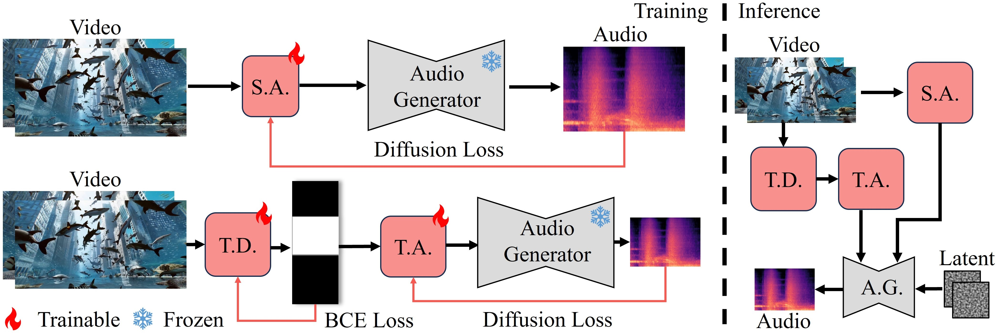

FoleyCrafter is a text-based video-to-audio generation framework which can generate high-quality audios that are semantically relevant and temporally synchronized with the input videos.
Tips: Foley is the reproduction of sound effects that are added to films, videos, and other media. Remember to turn up the volume!
Abstract
We study Neural Foley, the automatic generation of high-quality sound effects synchronizing with videos, enabling an immersive audio-visual experience. Despite
its wide range of applications, existing approaches encounter limitations when it comes to
simultaneously synthesizing high-quality and video-aligned (i.e.,, semantic relevant and temporal synchronized) sounds. To overcome these limitations,
we propose FoleyCrafter, a novel framework that leverages a pre-trained text-to-audio model to ensure high-quality audio generation. FoleyCrafter comprises two
key components: the semantic adapter for semantic alignment and the temporal
controller for precise audio-video synchronization. The semantic adapter utilizes
parallel cross-attention layers to condition audio generation on video features,
producing realistic sound effects that are semantically relevant to the visual content.
Meanwhile, the temporal controller incorporates an onset detector and a timestamp based adapter to achieve precise audio-video alignment. One notable advantage of FoleyCrafter is its compatibility with text prompts, enabling the use of text descriptions to achieve controllable and diverse video-to-audio generation according
to user intents. We conduct extensive quantitative and qualitative experiments on
standard benchmarks to verify the effectiveness of FoleyCrafter. Models and codes are available at Github.
Method

FoleyCrafter is built upon a pre-trained text-to-audio
(T2A) generator, ensuring high-quality audio synthesis. It comprises two main components: the
semantic adapter (S.A.) and the temporal controller, which includes a timestamp detector (T.D.) and a
temporal adapter (T.A.). Both the semantic adapter and the temporal controller are trainable modules
that take videos as input to synthesize audio, with audio supervision for optimization. The T2A
model remains fixed to maintain its established capability for high-quality audio synthesis.
Gallery
More new interesting cases are at link:
and under the tag #FoleyCrafter in twitter!
Audio Synthesis for Anime
Audio Synthesis for Sora Videos
Audio Synthesis for VGGSound Videos
Ground Truth
Generated Audios
Audio Synthesis Temporally Aligned with Visual Cues
Ground Truth
Generated Audios
Text-based Video to Audio Generation
Without Prompt
Prompt: seagulls
Prompt: background music
Without Prompt
Prompt: noisy, people talking
Prompt: whistle
Without Prompt
Negative Prompt: river flows
Negative Prompt: birds warbling
Without Prompt
Negative Prompt: wind noise
Prompt: horse neighing
BibTex
@article{zhang2024foleycrafter,
title={FoleyCrafter: Bring Silent Videos to Life with Lifelike and Synchronized Sounds},
author={Yiming Zhang and Yicheng Gu and Yanhong Zeng and Zhening Xing and Yuancheng Wang and Zhizheng Wu and Kai Chen},
year={2024}
}

 [Paper]
[Paper] [Code]
[Code] [Demo]
[Demo] [YouTube]
[YouTube]